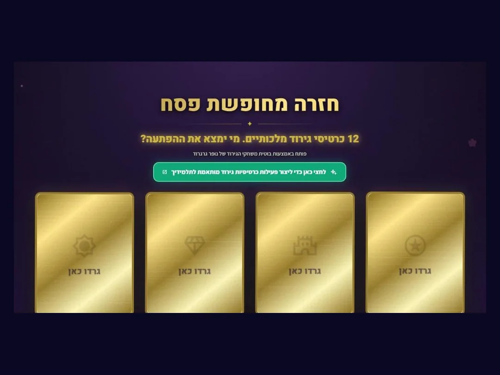
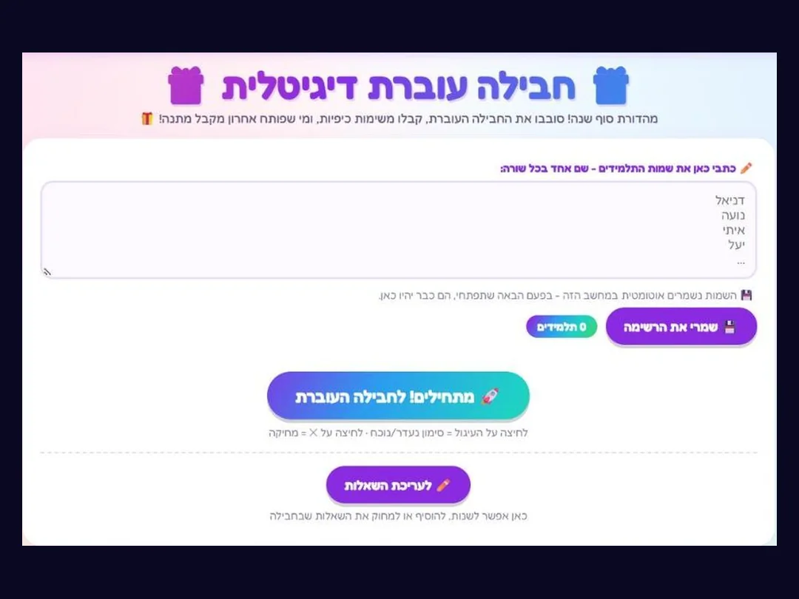
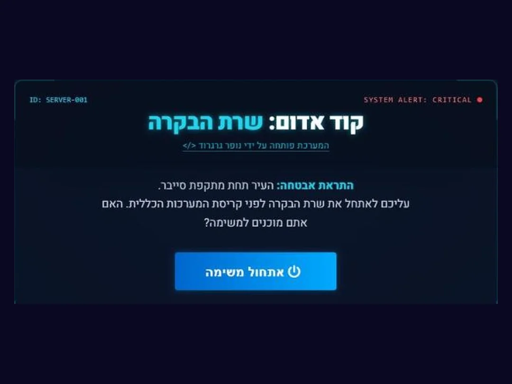

כלים לכל תחומי הדעת
נושאים נוספים
חדרי בריחה, מחוללי משחקים וכלים כיתתיים שמתאימים לכל מקצוע ולכל רמה.
5כלים ופעילויות
לכלתחומי הדעת
משחוקחדרי בריחה · משחקים
בחרו כלי
5 כלים · לחיצה פותחת בלשונית חדשה
חדר בריחה · א-ט
החנוכייה שנסעה בזמן
חדר בריחה דיגיטלי לחנוכה: 8 תחנות ו-40 דקות של היסטוריה, מדעים, מתמטיקה, שפה ומורשת. בהתחברות ללא עלות.
←כניסה לכלי01
מחולל משחקים · לכל הרמות
כרטיסי גירוד אינטראקטיביים
12 כרטיסי גירוד עם שאלות חזרה. עורכים את השאלות ויוצרים פעילות מותאמת לתלמידים שלכם.
←כניסה לכלי02
משחק כיתתי · לכל הרמות
חבילה עוברת דיגיטלית
מסובבים את החבילה, מקבלים משימות כיפיות, ומי שפותח אחרון מקבל מתנה. אפשר לערוך את השאלות.
←כניסה לכלי03
פלטפורמת משחקים · א-יב
סיפורי התנ"ך
חידון בכמה רמות, שעשועוני מילים ומדרש תמונה - משחקים להפוגה ולשיעורים מתוקשבים.
←כניסה לכלי04
חדר בריחה · חומרה
קוד אדום: שרת הבקרה
העיר תחת מתקפת סייבר! מאתחלים את שרת הבקרה לפני קריסת המערכות. חדר בריחה בנושא חומרת המחשב.
←כניסה לכלי05